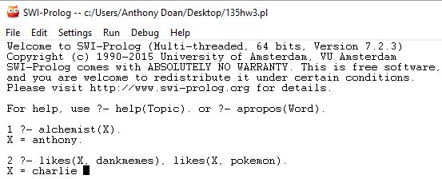
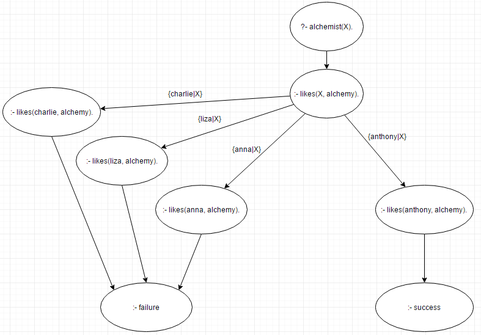

Course Website and Definitions about Programming Languages (web posting)
(1)
My name is Anthony Doan, and I'm working on a bachelor's degree in Computer Science. My interests consist of web development, fishing and video games. As for career goals I would like to get a job in game development or web development.
Email: anthonydoan@csus.edu
(2)
Programming languages I know well are Java and C.
Programming languages I want to learn more about are Javascript, PHP and MySQL because I want to work on databases and dynamic websites.
(3)
PL Assignment 1:
(a) Syntax: defines the formal relations between the constituents of a language, thereby providing a structural description of the various expressions that make up legal strings in the language.
(b) Semantics: For programming languages, semantics describes the behavior that a computer follows when executing a program in the language.
(c) Lexical scanning: is the process of scanning the stream of input characters and separating it into strings called tokens.
(d) Parsing: (also known as syntax analysis) can be defined as a process of analyzing a text which contains a sequence of tokens, to determine its grammatical structure with respect to a given grammar.
(d) Parser: receives a string of tokens from the lexical analyzer and constructs a parse tree if the string of tokens can be generated by the grammar of the source language; otherwise, it reports the syntax errors present in the source string.
References: Syntax (Page 1), Semantics (Page 1), Lexical scanning, Parsing and parser.
6. Exam problem contribution. Using the Example "Every scientist is logician" (see
handout) as a guide, to create a problem with following 4 parts and then give solution to your own
problem, Post your problem ((a) - (c)) and solution ((d) - (e)) at your website to share with your
classmates. (Note: You may scan / take a picture of hand drawn deduction tree or draw it with a tool
digitally)
(a) Write a PROLOG representation of the following facts: (your at least 5 facts in English);
likes(charlie, dankmemes). /*charlie likes dankmemes*/
likes(anthony, alchemy). /*anthony likes alchemy*/
likes(liza, pokemon). /*liza likes pokemon*/
likes(charlie, pokemon). /*charlie likes pokemon*/
likes(anna, pokemon). /*anna likes pokemon*/
(b) Write a PROLOG representation of the following rule: (your at least 3 rules in English);
memelord(X) :- likes(X, dankmemes). /*X is a memelord if X likes dankmemes*/
alchemist(X) :- likes(X, alchemy). /*X is a alchemist if X likes alchemy*/
trainer(X) :- likes(X, pokemon). /*X is a trainer if X likes pokemon*/
(c) Write two PROLOG goal statements to search for answers: (also give 2 W questions in
English), and at least one of your goal statements should be a conjunction of two subgoals:
?- alchemist(X). /*who is a alchemist*//*answer = anthony*/
?- likes(X, dankmemes), likes(X, pokemon). /*who likes dankmemes and pokemon*//*answer = charlie*/
(d) Run each given query in (c) using Prolog and then post the interactive sessions as part
of your solution at your website;

(e) Show deduction tree that deducing the answer for one of the W questions above according
to Prolog search strategy (a picture to post).

Web-based Recursive Descent Recognizer
EXP ::= EXP + TERM | EXP - TERM | TERM
TERM ::= TERM * FACTOR | TERM / FACTOR | FACTOR
FACTOR ::= ( EXP ) | DIGIT
DIGIT ::= 0 | 1 | 2 | 3
Assumptions:
- Assume the input stream is the token stream.
- Assume the input stream terminates with a $.
- Assume there is no white space.
Example of some valid strings:
1+2$
0-3*2$
2/(3+1)$
Example of some invalid strings:
1+2
1*4$
1*a$
Enter string using the numbers 0 to 9, and the
symbols +, -, *, /, (, and ).
Your end of string variable will be dollar sign ($).
When you click on 'Submit', it will check whether entered string is valid or not for a given grammar.
Enter an input string please.
(1) The language I chose for my RDR implementation was JavaScript. I chose JavaScript because it is considered a functional programming language like Scheme. After doing a tutorial for JavaScript I felt the language was easy to use. (2) Useful learning resource I used for implementation: JavaScript Tutorial (3) RDR reference used